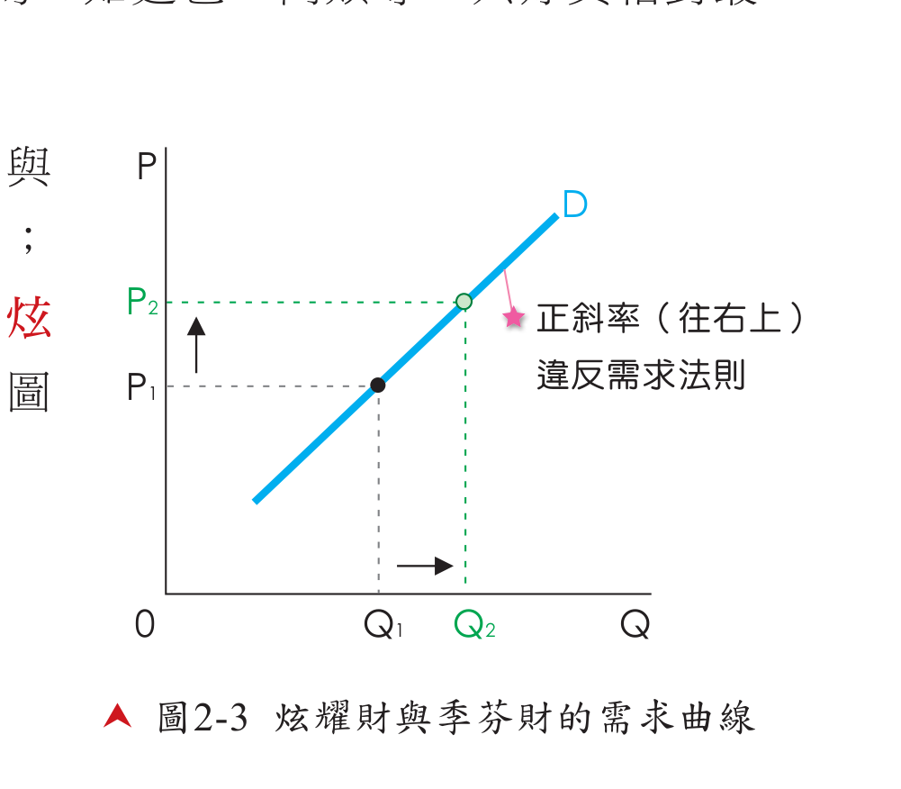
| 例外類型 | 提出學者與背景 | 經濟本質與行為特徵 | 需求曲線特徵 |
|---|---|---|---|
| 炫耀財 （Veblen Goods） |
19 世紀末美國學者韋伯倫（Thorstein Veblen）研究提出，又稱韋伯倫財。 | 具有顯著的炫耀財富與身分地位象徵，價格愈昂貴（P↑），愈能彰顯尊榮身分，富人反而買愈多（Qd↑）。如百萬名表、限量珠寶、超跑、名牌包。 | 呈正斜率 （由左下向右上延伸，如圖 2-3） |
| 季芬財 （Giffen Goods） |
19 世紀英國學者季芬（Robert Giffen）於 1845 年愛爾蘭大饑荒時發現。 | 季芬財必為劣等財的一種，其支出占窮人所得比例極高。當饑荒發生馬鈴薯大漲時，人民實質所得劇降，買不起肉類與麵包，只好將省下的錢全部轉買相對便宜的馬鈴薯，導致價格漲需求量反而大增（P↑, Qd↑）。 | |
| 投機心理財 | 金融期貨、股票市場或房地產飆漲期。 | 市場大眾抱持「買漲不買跌」預期，價格愈飆買氣愈旺；價格下跌反而乏人問津。 |
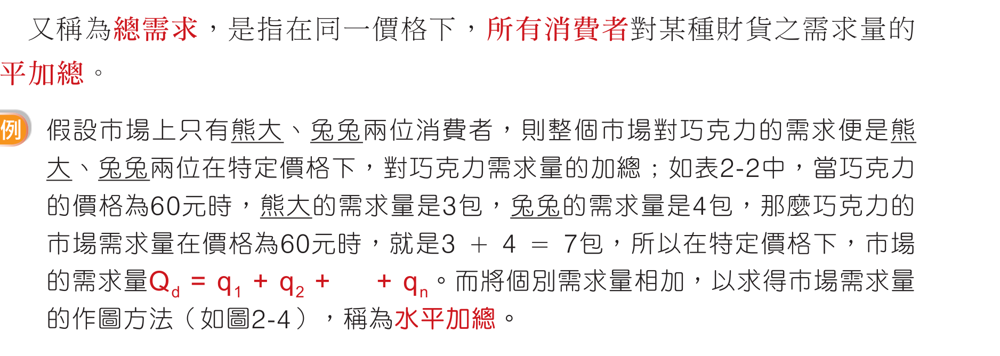
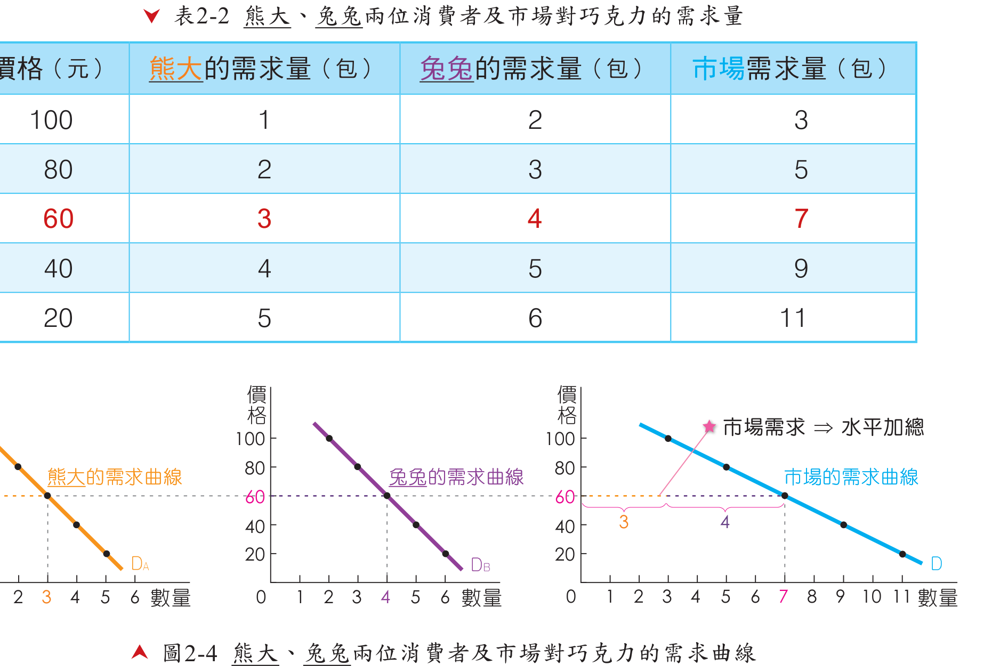
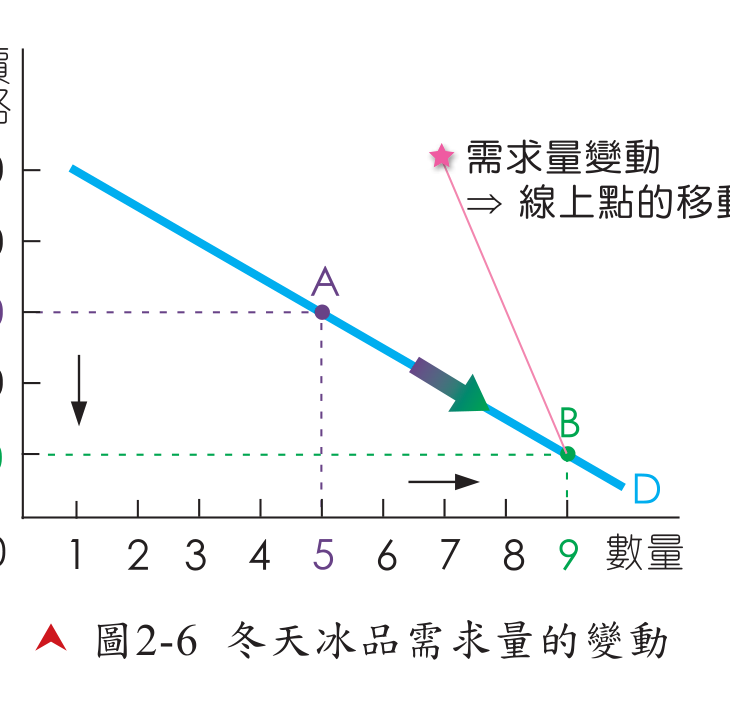
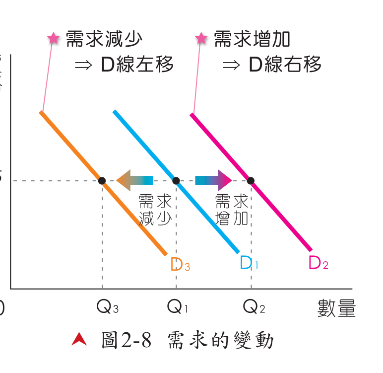
| 變動類型 | 發生原因 | 圖形特徵 | 統測常考實例 |
|---|---|---|---|
| 需求量變動 (Change in Qd) |
只有該財貨「本身的價格 P」改變 | 點在同一條需求線上移動 | 冰品打折降價（P↓），買的人多買 2 支（點在線上往右下移）。 |
| 需求的變動 (Change in Demand) |
價格以外的「五大外在因素」改變 | 整條需求線平移 (右移增加 / 左移減少) |
天氣炎熱（偏好增）、人口增加、所得增加使買氣暴增（整條右移）。 |
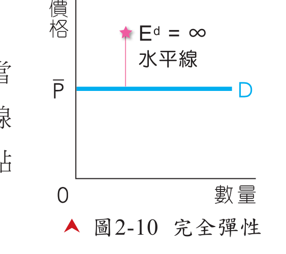
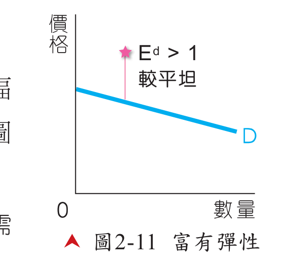
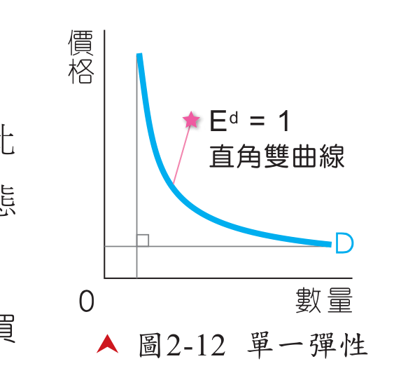
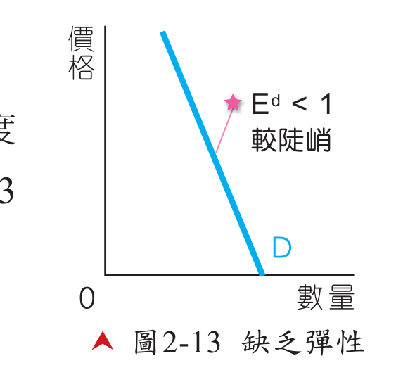
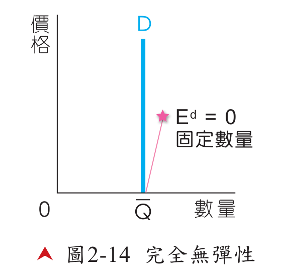
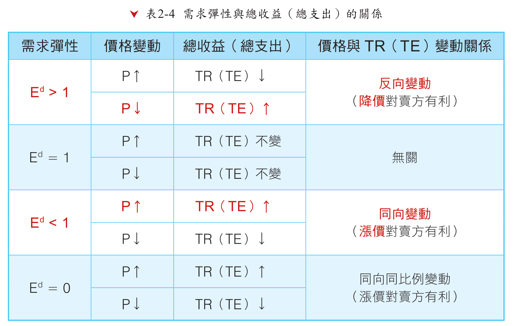
| 彈性數值大小 | 曲線形狀特徵 | 價格變動 (P ↑) | 價格變動 (P ↓) | 統測經典結論與名言 |
|---|---|---|---|---|
| 富有彈性 (Ed ＞ 1) | 平坦傾斜 | TR 減少 (損失大於收益) | TR 增加 (顧客增幅大) | 「薄利多銷」（降價才能賺更多，如非必需精品）。 |
| 單一彈性 (Ed ＝ 1) | 正等軸雙曲線 | TR 不變 | TR 不變 | 價格與數量增減比例剛好相抵，TR 達到最大值。 |
| 缺乏彈性 (Ed ＜ 1) | 陡峭傾斜 | TR 增加 (漲價不跑客) | TR 減少 (降價顧客不增) | 「穀賤傷農」（農產品盛產價暴跌，農民總收益大減！）。 |
| 決定因素 | 富有彈性（Ed 較大）的情形 | 缺乏彈性（Ed 較小）的情形 | 統測實例 |
|---|---|---|---|
| ① 替代品的多寡 | 替代品眾多（買者隨時可轉向） | 替代品極少甚至無可替代 | 手搖飲料（替代多，彈性大）；胰島素、水電（替代少，彈性小）。 |
| ② 支出占所得比例 | 支出占所得比例愈高（價格稍漲負擔沉重） | 支出占所得比例極微小 | 汽車、房價（占比高，彈性大）；牙籤、食鹽、火柴（占比低，彈性小）。 |
| ③ 財貨的消費性質 | 奢侈品（非生存必需，可買可不買） | 必需品（維持生存所必需） | 出國度假、珠寶名牌（奢侈品彈性大）；米、油、食鹽、自來水（必需品彈性小）。 |
| ④ 考慮時間的長短 | 考慮時間愈長（買者有充裕時間尋找替代） | 考慮時間極短暫（短期應變不及） | 汽油長期彈性大（可換電車、搭捷運）；汽油短期彈性小（明早仍需開車上班）。 |
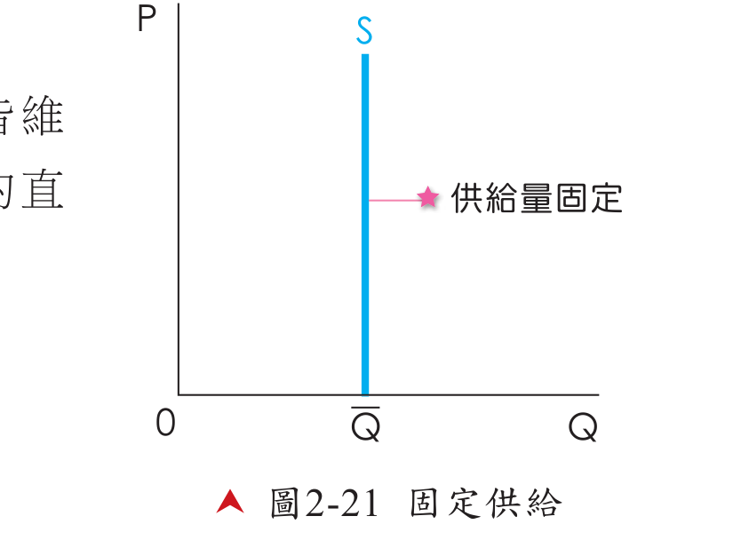
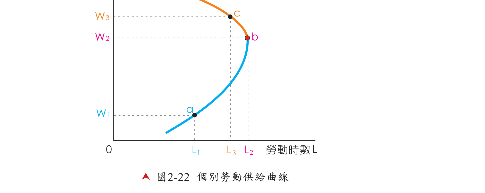
| 分類標準 | 供給種類 | 定義特徵與實例 |
|---|---|---|
| 依供給彈性/彈性 | 固定供給 vs 變動供給 | 固定供給： 供給量不可變動（垂直線，如土地）。 變動供給： 供給量隨價格變動而增減（如一般工廠產品）。 |
| 短期供給 vs 長期供給 | 短期供給： 廠商設備固定，僅能增減勞動原料，供給彈性較小。 長期供給： 廠房設備可完全擴建或退出，供給彈性較大。 |
|
| 依關聯性 | 獨立供給 vs 聯合供給 | 獨立供給： 生產某產品不影響其他產品供給（如單獨生產腳踏車）。 聯合供給（副產品）： 生產主產品同時必然伴隨產出副產品！主產品增產，副產品供給必然跟著增加（如牛肉與牛皮、石油與瀝青）。 |
| 個別供給 vs 市場供給 | 市場供給是由市場內所有個別廠商之供給曲線水平相加（Horizontal Summation）而成。 |
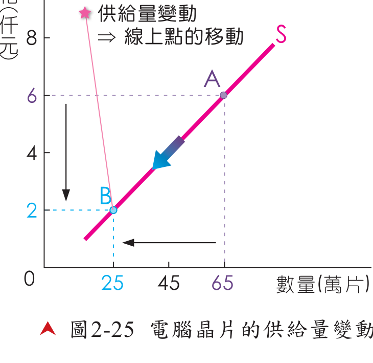
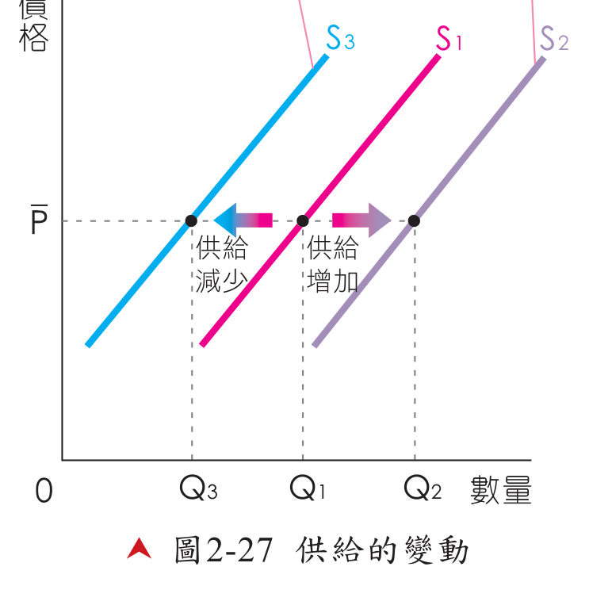
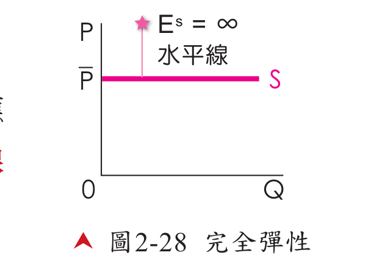
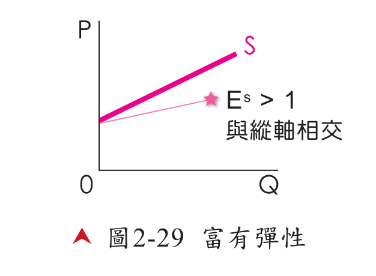
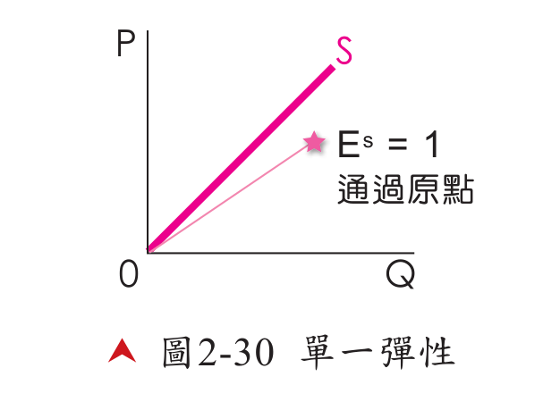
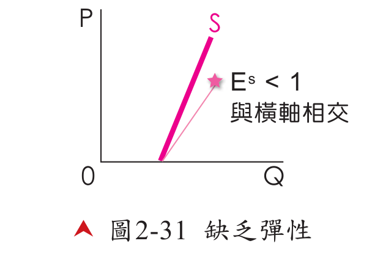
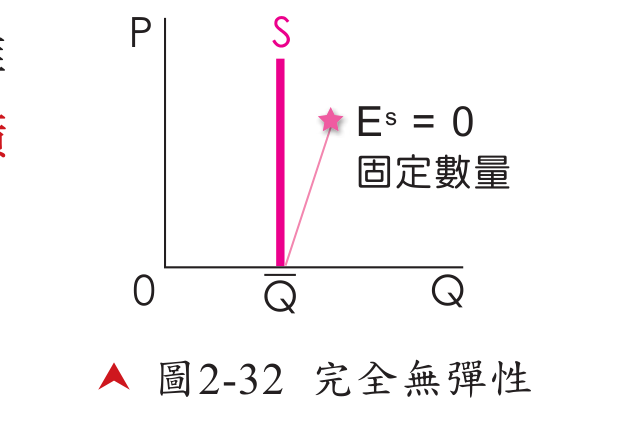
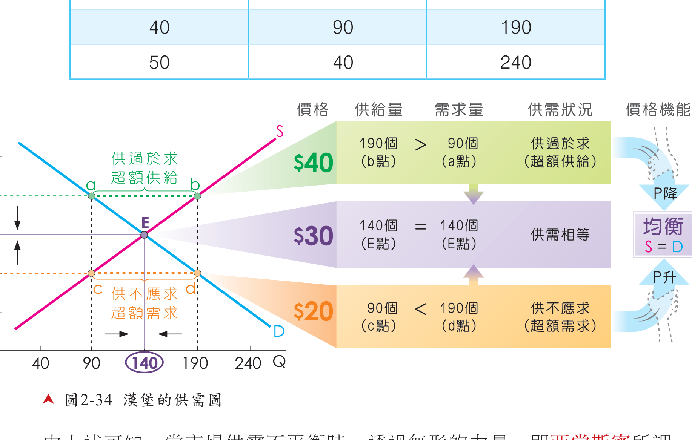
| 變動情況 | 均衡價格 (P*) | 均衡數量 (Q*) | 秒殺推導心法 |
|---|---|---|---|
| D ↑ 且 S ↑ | 無法確定（看誰變動大） | 必定增加 (Q* ↑) | D↑促價漲、S↑促價跌（互相抵銷看幅度）；但兩者皆促使數量大增！ |
| D ↓ 且 S ↓ | 無法確定（看誰變動大） | 必定減少 (Q* ↓) | 兩者皆使交易冷清，數量必然縮水；價格走勢需看幅度。 |
| D ↑ 且 S ↓ | 必定上漲 (P* ↑) | 無法確定（看誰變動大） | 買方搶購、賣方減產，雙雙推升價格！數量因一增一減而無法確定。 |
| D ↓ 且 S ↑ | 必定下跌 (P* ↓) | 無法確定（看誰變動大） | 買方縮手、廠商大量拋售，價格崩跌！數量則看增減幅度而定。 |
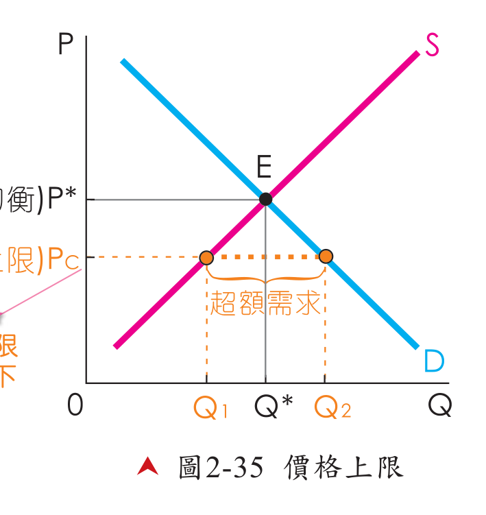
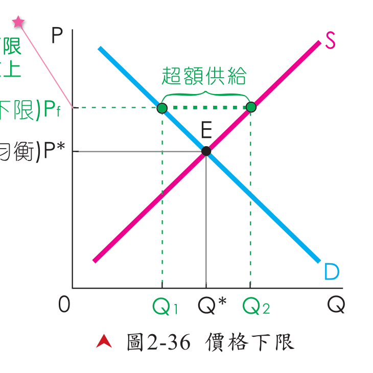
| 政策項目 | 價格上限（Price Ceiling） | 價格下限（Price Floor） |
|---|---|---|
| 實施目的 | 保護消費者（防止物價飆漲負擔過重） | 保護生產者或勞工（保障基本生計與收益） |
| 有效實施條件 | 管制價格必須「低於市場均衡價（Pc ＜ P*）」 | 管制價格必須「高於市場均衡價（Pf ＞ P*）」 |
| 造成的後果 |
• 出現超額需求（供不應求／市場短缺）。 • 排隊搶購、配給制、黑市交易（地下抬價）。 • 廠商偷工減料，商品品質實質惡化。 |
• 出現超額供給（市場過剩）。 • 產品滯銷堆積，需政府出資保證收購。 • 若為勞動市場（最低工資），則引發非自願性失業。 |
| 課本經典案例 | 戰時民生物資管制、平價房租管制、油電凍漲。 | 農產品保證收購價格、法定最低工資法規。 |
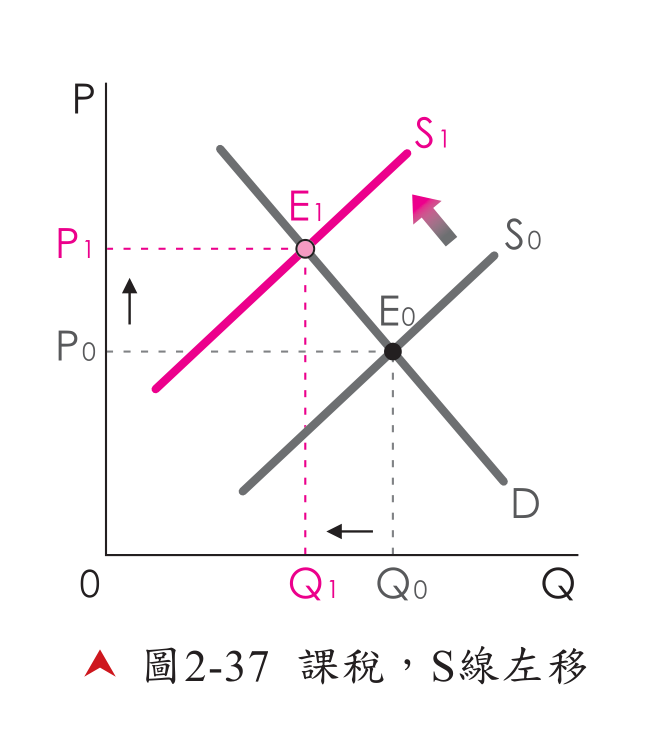
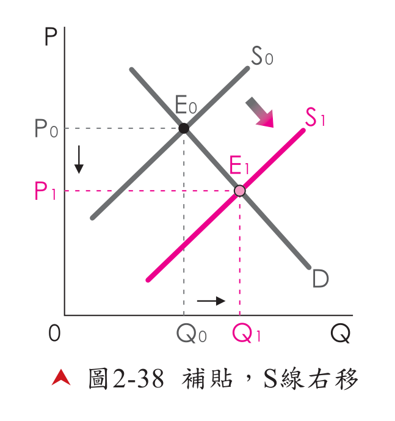